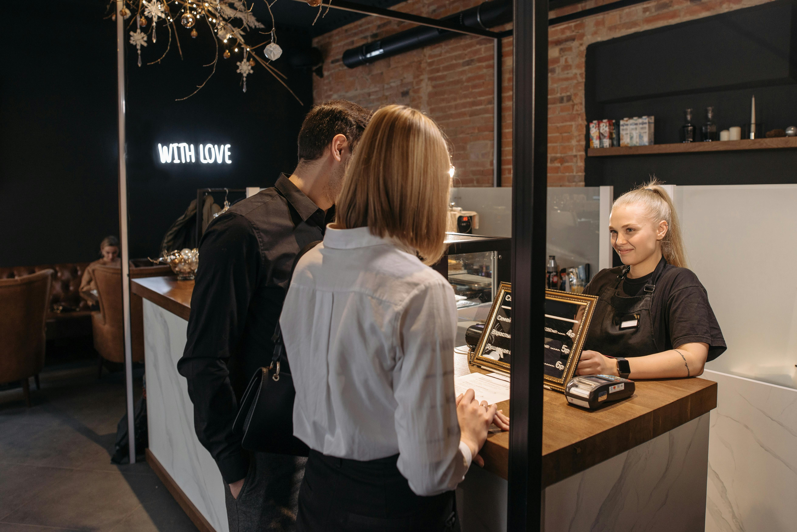
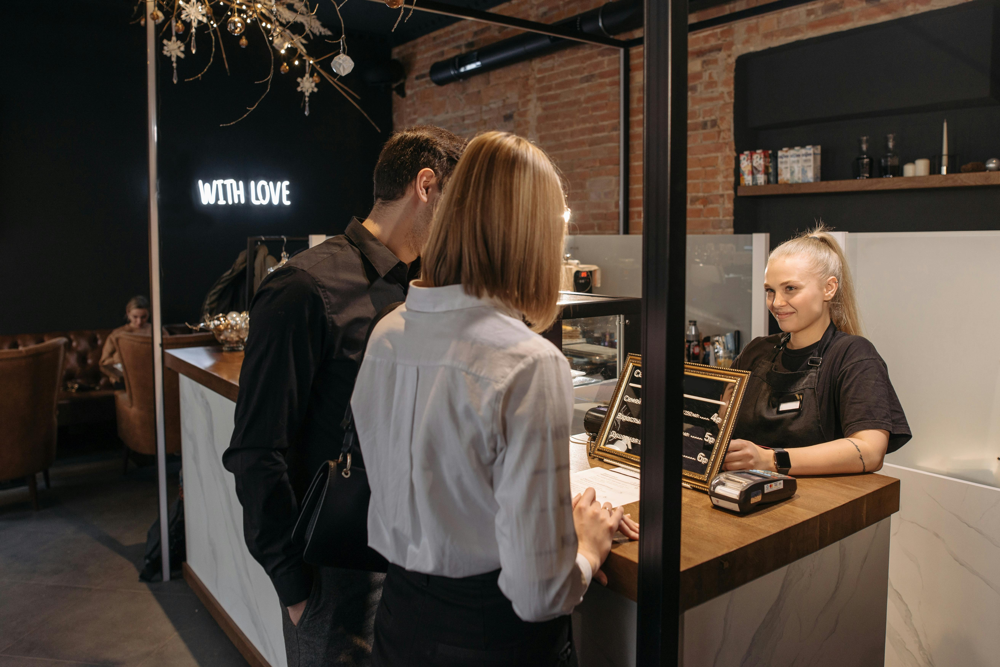
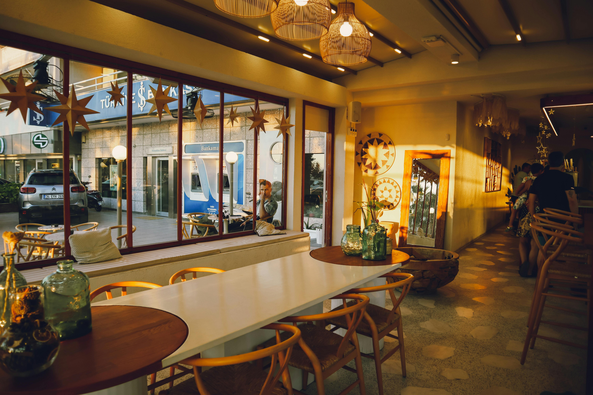
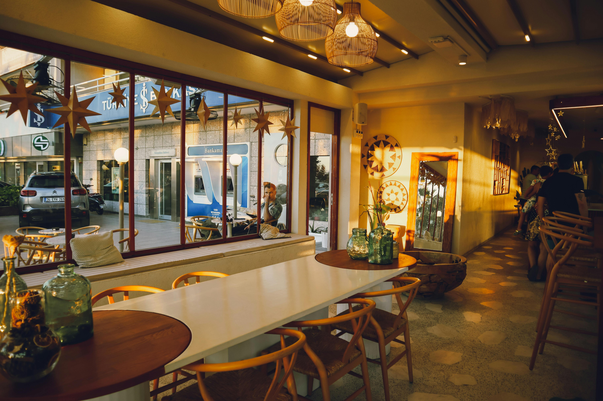

About Us
Founded in 2010, Read Café Bliss is dedicated to serving freshly brewed
coffee and homemade treats in a warm, welcoming atmosphere for readers
looking for a calm and peaceful space.
Our café supports the reading community in and around the state.
From Historical to Sci-Fi, Self-Help to Fiction — we have books
for every genre lover who wants to explore.
 

 
